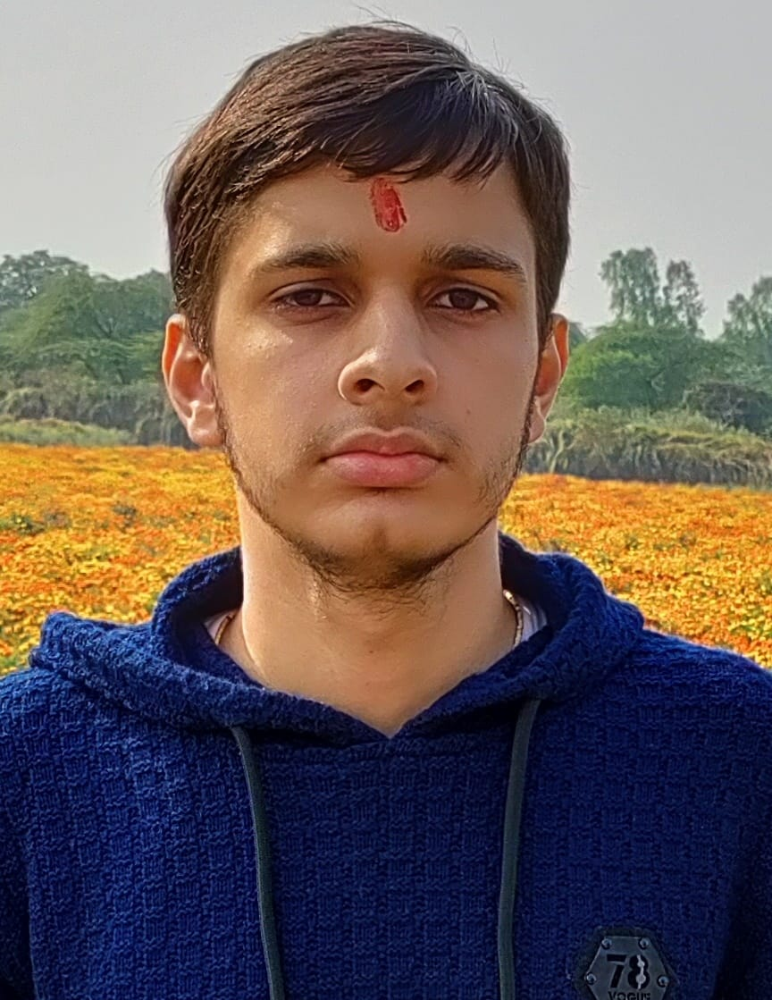

Picture Gallery



Student | Lifelong Learner
Hello! My name is Samrath Singh. I am currently pursuing an M.Tech in Computer Science and Information Security (CSIS) at IIIT Hyderabad.
I completed my B.Tech in Electronics and Communication Engineering from Delhi Technological University (DTU) in 2025. My academic journey has given me exposure to technology, programming and various areas of computer science.
I enjoy learning new concepts, exploring technology and continuously developing my technical and professional skills.
I currently do not have any formal work experience. I am focusing on building my technical knowledge, developing new skills and gaining experience through academic projects and learning opportunities.